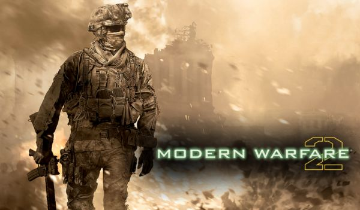

In mijn vrije tijd speel ik slagwerk. Mijn voorkeur gaat naar melodisch slagwerk.
Thuis heb ik een drumstel en een marimba waarop ik veel oefen. Verder speel ik bij een muziekkrops en een slagwerkensemble.
Het is altijd erg gezellig om gezamenlijk te spelen en je maakt op deze manier veel contacten.
De meeste mensen weten niet wat een marimba is. Ik noem het altijd, de grote broer van de xylofoon.
Een marimba is namelijk groter en heeft "de baard in de keel gehad" (dieper warmere klank).
Bovenstaand: 5 octaafs marimba.
In 2016 heb ik meegedaan aan het solistenconcours femuza te IJlst.
Tijdens de optredens zijn opnames gemaakt (zie onder).
in het filmpje speel ik op mijn eigen 4.3 octaafs marimba.
Met het korps treden wij regelmatig op.
Onderstaand een opname van het korps tijdens het concours "OMF" in 2018
Als laatst nog een filmpje van het slagwerkensemble.
Mijn andere hobby is gamen. De hobby begon op de basisschool,
toen wij elke ochtend, voor de les begon rond 2 computers stonden, of zelf achter de computer zat.
Wij speelden vooral runescape wat toen populair was. Later werden het andere free to play spellen.
Op de middelbare school ging ik over naar de first-person shooter Call of Duty.
Ik heb vooral modern warfare 2 gespeeld die toendertijd het nieuwst was. Dit heb ik 2 tot 3 jaar gespeeld.

Na Call of Duty stapte ik over naar World of Warcraft. Ik begon samen met een paar vrienden op een private server.
Tijdens mijn examens op het vmbo ging ik over naar de echte versie van WoW.
Ik haalde namelijk goede cijfers en hoefde niet veel te leren, waardoor ik veel vrije tijd had.
Op het moment game ik een stuk minder vanwege de studie.
Als ik game speel ik vooral League of Legends wat onder het genre MOBA valt.